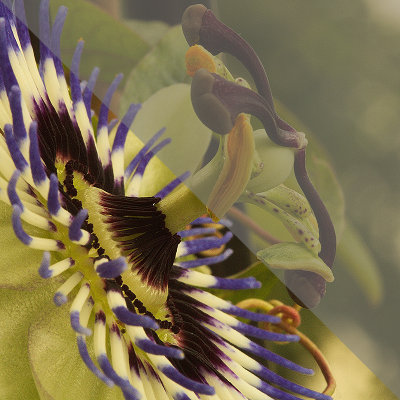
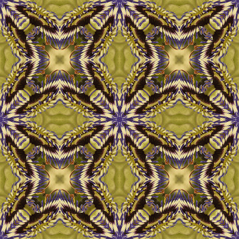

This plugin creates three symmetries of a layer. They are available in the menu Layer ➤ Symmetries.
Each symmetry has its own menu entry (instead of using a dialog to select options) so it can be assigned to its own keyboard shortcut.
This symmetry folds a layer along one of its medians. The name of the symmetry is the name of the side which is kept and replicated.
This symmetry folds a square layer along one of its diagonals. The name of the symmetry is the name of the corner which is kept and replicated. The filter only operates on square layers.
This symmetry copies and rotates the layer by multiples of 90°, and the resulting copies are joined around a corner. The layer may not be square.
Take any image, and:
The source image (the corner used (SW) is highlighted):

The final image after one diagonal and two quadrilateral symmetries (scaled down):
